स्थापना
किसी भी क्रोमियम-आधारित ब्राउज़र (क्रोम, एज, ब्रेव, आर्क, ओपेरा, आदि) पर लाइव ट्रांसलेटर एक्सटेंशन इंस्टॉल करें।
क्लिक करें क्रोम में जोड़ें बटन। इससे एक्सटेंशन फ़ाइल डाउनलोड हो जाएगी.
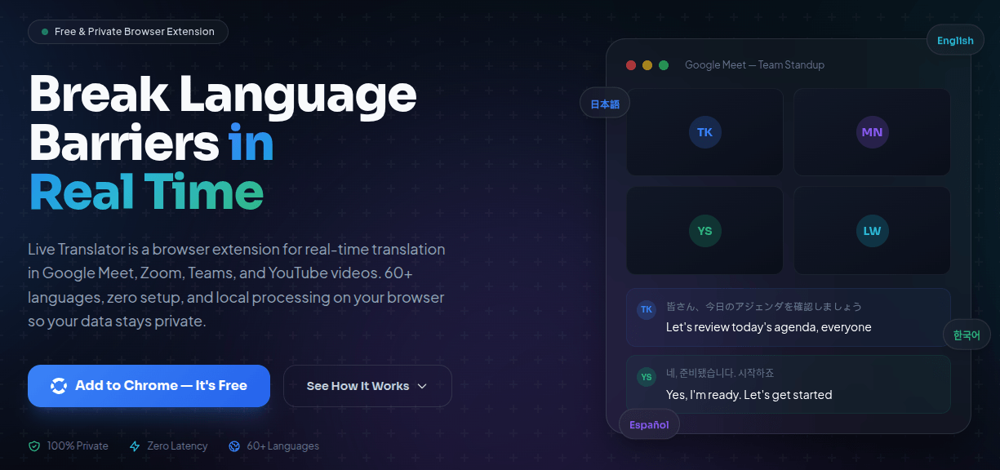
अपने ब्राउज़र का एक्सटेंशन प्रबंधन पृष्ठ खोलें:
- क्रोम/ब्रेव/आर्क: प्रकार
chrome://extensionsएड्रेस बार में और एंटर दबाएं। - किनारा: प्रकार
edge://extensionsएड्रेस बार में और एंटर दबाएं।
टॉगल करें डेवलपर मोड पेज के ऊपरी दाएं कोने में चालू है।
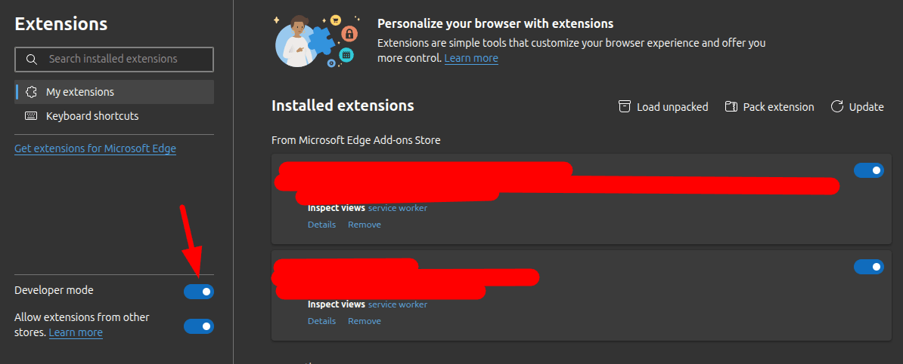
डाउनलोड किए गए को खींचें और छोड़ें .zip एक्सटेंशन पेज पर फ़ाइल करें।
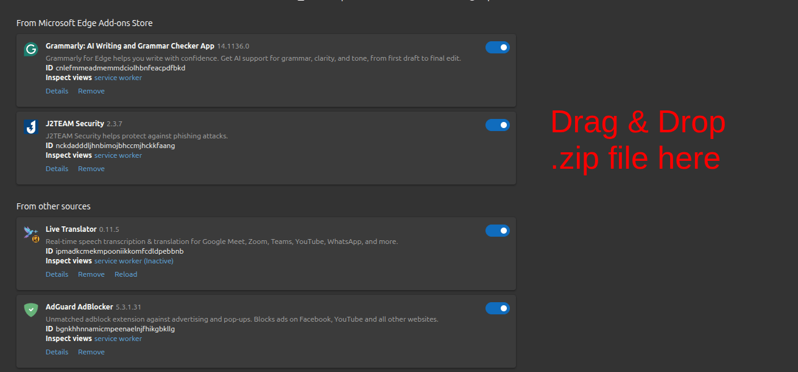
अब आपको अपने ब्राउज़र टूलबार में लाइव ट्रांसलेटर आइकन देखना चाहिए। एक्सटेंशन स्थापित है और कॉन्फ़िगर होने के लिए तैयार है।
समर्थित प्लेटफार्म
लाइव ट्रांसलेटर इन वेबसाइटों और प्लेटफार्मों पर काम करता है। बस इनमें से कोई भी साइट खोलें और अनुवाद शुरू करने के लिए एक्सटेंशन आइकन पर क्लिक करें।
| प्लेटफार्म | आप क्या कर सकते हैं |
|---|---|
| गूगल मीट | बैठकों का अनुवाद करें, अपनी आवाज बताएं, चैट भेजें |
| ज़ूम (वेब) | बैठकों का अनुवाद करें, अपनी आवाज बताएं, चैट भेजें |
| माइक्रोसॉफ्ट टीमें (वेब) | बैठकों का अनुवाद करें, अपनी आवाज बताएं, चैट भेजें |
| यूट्यूब | वीडियो का अनुवाद करें, वीडियो शीर्षक से संदर्भ स्वतः भरें |
| व्हाट्सएप वेब | कॉल का अनुवाद करें, अपनी आवाज़ बताएं |
| फेसबुक | वीडियो और लाइव स्ट्रीम का अनुवाद करें |
| टिकटॉक | वीडियो का अनुवाद करें |
| डौयिन | वीडियो का अनुवाद करें |
| वीमियो | वीडियो का अनुवाद करें |
| डेलीमोशन | वीडियो का अनुवाद करें |
| उडेमी | पाठ्यक्रम वीडियो का अनुवाद करें |
| डोमेस्टिका | पाठ्यक्रम वीडियो का अनुवाद करें |
एक्सटेंशन कैप्चर करता है टैब ऑडियो सीधे, इसलिए यह समर्थित साइटों पर ब्राउज़र टैब में चल रहे किसी भी ऑडियो के साथ काम करता है - दूसरे पक्ष के ऑडियो के लिए अलग माइक्रोफोन सेटअप की आवश्यकता नहीं है।
एक्सटेंशन अवलोकन
मुख्य इंटरफ़ेस का एक त्वरित अवलोकन और जहां सब कुछ स्थित है।
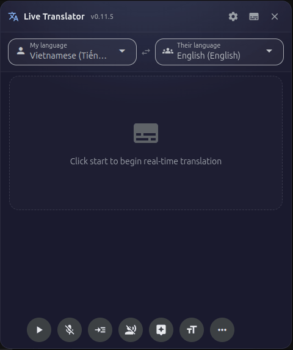
लाइव ट्रांसलेटर पैनल में ये मुख्य क्षेत्र हैं:
- शीर्षक पट्टी - सेटिंग्स बटन, उपशीर्षक मोड टॉगल, बंद करें बटन। यदि कोई अपडेट उपलब्ध है, तो आपको यहां एक बैज दिखाई देगा।
- भाषा चयनकर्ता — दो ड्रॉपडाउन: "मेरी भाषा" (वह भाषा जो आप बोलते हैं) और "उनकी भाषा" (वह भाषा जिससे आप अनुवाद करना चाहते हैं)।
- प्रतिलेख क्षेत्र - जहां अनुवादित पाठ स्पीकर द्वारा व्यवस्थित होकर वास्तविक समय में दिखाई देता है।
- कंट्रोल बार - प्रारंभ/रोकें/रोकें बटन, माइक्रोफ़ोन टॉगल, वर्णन सेटिंग, एआई सहायक, फ़ॉन्ट आकार, डाउनलोड, और अधिक विकल्प।
आप कर सकते हैं पैनल को खींचें इसे स्क्रीन पर कहीं भी ले जाने के लिए इसके टाइटल बार का उपयोग करें, और इसका आकार बदलें किनारों को खींचकर। इस तरह यह मीटिंग या वीडियो के दौरान महत्वपूर्ण सामग्री को ब्लॉक नहीं करेगा।
सोनियोक्स एपीआई कुंजी प्राप्त करें
Soniox वास्तविक समय वाक् पहचान और अनुवाद इंजन प्रदान करता है। लाइव ट्रांसलेटर का उपयोग करने के लिए आपको एक सोनियोक्स एपीआई कुंजी की आवश्यकता है। आवश्यक है
एक सोनियोक्स एपीआई कुंजी है आवश्यक है कार्य विस्तार के लिए। इसके बिना, एक्सटेंशन किसी भी ऑडियो को ट्रांसक्राइब या अनुवाद नहीं कर सकता है।
खुला https://console.soniox.com/signup आपके ब्राउज़र में। अपने ईमेल या Google साइन-इन का उपयोग करके एक खाता बनाएं।
साइन इन करने के बाद, अपने सोनियोक्स डैशबोर्ड के एपीआई अनुभाग पर जाएँ। आप सीधे भी जा सकते हैं Soniox प्रारंभ करें मार्गदर्शिका चरण-दर-चरण निर्देशों के लिए।
अपनी एपीआई कुंजी कॉपी करें - आपको अगले चरणों में इसकी आवश्यकता होगी।
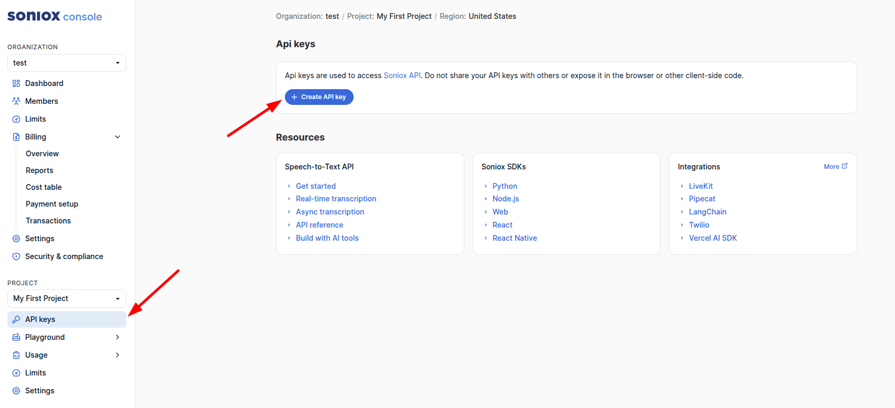
अपने सोनीओक्स खाते में एक भुगतान विधि जोड़ें। आप क्रेडिट कार्ड, पेपाल या अन्य भुगतान विधियों का उपयोग कर सकते हैं। सोनियोक्स एपीआई भुगतान-जैसा-आप-जाना है - आप केवल उसी के लिए भुगतान करते हैं जो आप उपयोग करते हैं।
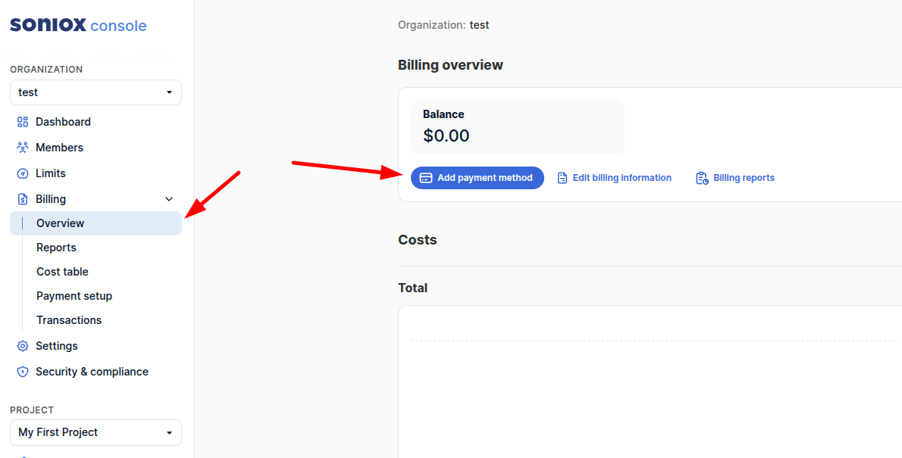
एपीआई का उपयोग करने के लिए आपको अपने खाते में न्यूनतम $1 जमा करना होगा। आप चाहें तो और भी जमा कर सकते हैं.
ओपनएआई एपीआई कुंजी प्राप्त करें (वैकल्पिक)
एक OpenAI API कुंजी है वैकल्पिक - आपको इसकी आवश्यकता केवल तभी होगी जब आप कथन के लिए ओपनएआई आवाज या इनलाइन एआई सहायक सुविधा का उपयोग करना चाहते हैं। प्रो
यदि आपके पास OpenAI खाता नहीं है, तो क्लिक करें "साइन अप करें" और एक बनाएं। यदि आपके पास पहले से ही एक है, तो साइन इन करें।
क्लिक करें "+ नई गुप्त कुंजी बनाएं", इसे "लाइव ट्रांसलेटर" जैसा नाम दें और क्लिक करें "गुप्त कुंजी बनाएं".
कुंजी को तुरंत कॉपी करें और सहेजें - ओपनएआई इसे केवल एक बार दिखाएगा।
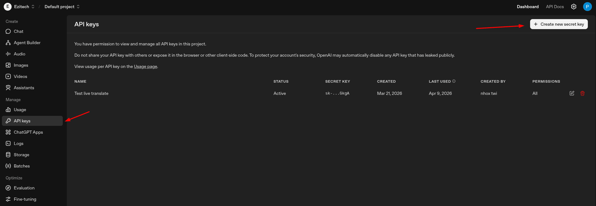
पर जाएँ बिलिंग सेटिंग और एक भुगतान विधि जोड़ें। ओपनएआई एपीआई भुगतान-जैसा-आप-जाना है - आप केवल उसी के लिए भुगतान करते हैं जो आप उपयोग करते हैं।
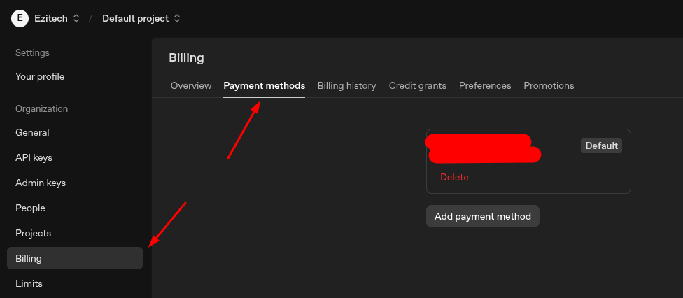
यदि आप केवल वर्णन (पाठ से वाक्) चाहते हैं, तो आप इसका उपयोग कर सकते हैं Google अनुवाद आवाजें निःशुल्क इसके बजाय। OpenAI कुंजी केवल तभी आवश्यक है जब आप OpenAI की प्रीमियम आवाज़ें या AI सहायक सुविधा चाहते हैं।
अपनी एपीआई कुंजी दर्ज करें
एक बार जब आपके पास अपनी एपीआई कुंजियाँ हों, तो उन्हें लाइव ट्रांसलेटर सेटिंग पृष्ठ में दर्ज करें।
आप इनमें से किसी भी तरीके से सेटिंग खोल सकते हैं:
- क्लिक करें गियर आइकन (⚙) अनुवादक पैनल के शीर्ष दाईं ओर।
- अपने टूलबार में लाइव ट्रांसलेटर आइकन पर राइट-क्लिक करें → "विकल्प".
- अपने ब्राउज़र के एक्सटेंशन पेज पर जाएं → लाइव ट्रांसलेटर ढूंढें → "विवरण" → "विस्तार विकल्प".
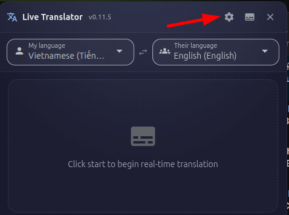
सेटिंग्स पेज में, पर क्लिक करें "सोनियोक्स" बाएं साइडबार में। अपनी सोनियोक्स एपीआई कुंजी को इनपुट फ़ील्ड में चिपकाएँ। कुंजी स्वचालित रूप से सहेजी जाती है.
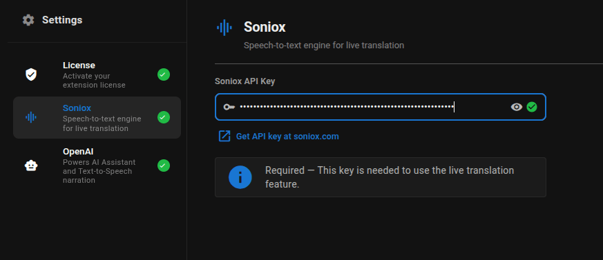
पर क्लिक करें "ओपनएआई" बाएँ साइडबार में। अपनी OpenAI API कुंजी को इनपुट फ़ील्ड में चिपकाएँ। कुंजी स्वचालित रूप से सहेजी जाती है.
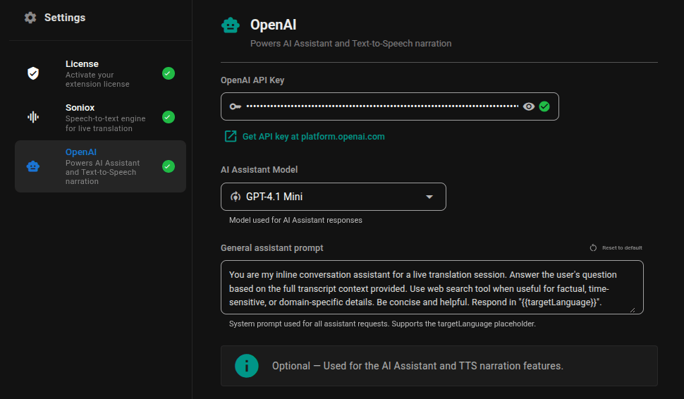
आपकी एपीआई कुंजियाँ संग्रहीत हैं स्थानीय रूप से केवल आपके डिवाइस पर क्रोम के सुरक्षित एक्सटेंशन स्टोरेज का उपयोग करना। उन्हें लाइव ट्रांसलेटर के सर्वर पर कभी नहीं भेजा जाता है - उनका उपयोग केवल सोनियोक्स और ओपनएआई के साथ सीधे संचार करने के लिए किया जाता है।
लाइसेंस कुंजी खरीदें
एक लाइसेंस कुंजी प्रो सुविधाओं जैसे कथन, एसआरटी डाउनलोड, एआई सहायक और बहुत कुछ को अनलॉक करती है।
लाइव ट्रांसलेटर होमपेज पर जाएं https://translate.ezitech.io/#pricing और स्क्रॉल करें मूल्य निर्धारण अनुभाग, या क्लिक करें "लाइसेंस खरीदें" एक्सटेंशन के सेटिंग पेज में लिंक।
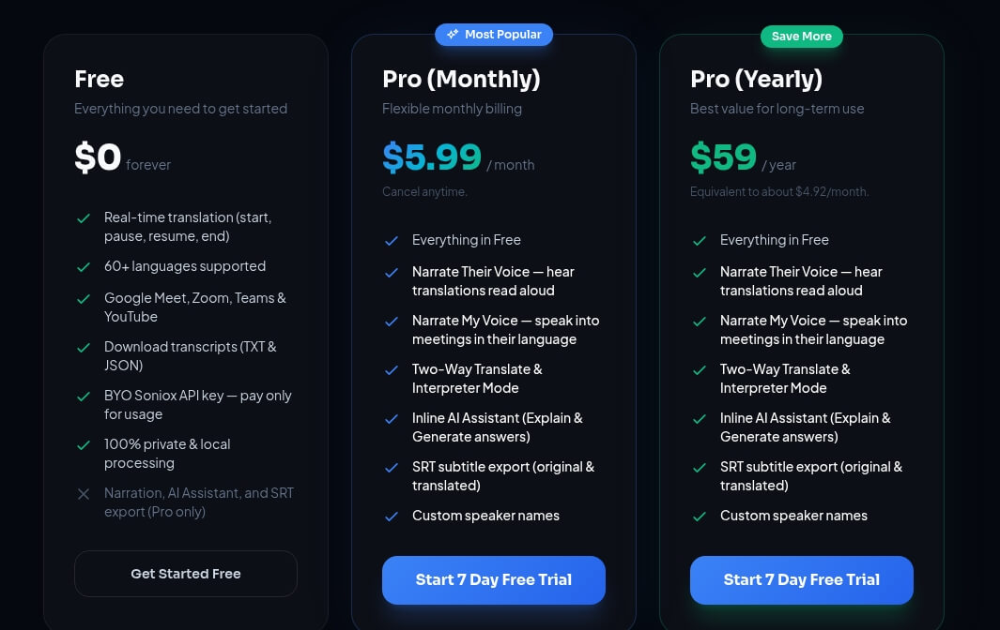
किसी एक को चुनें:
- मासिक - $5.99/माह
- वार्षिक - $59/वर्ष (~18% बचाएं)
आप एक प्राप्त कर सकते हैं 7 दिन का निःशुल्क परीक्षण प्रो सुविधाओं को आज़माने के लिए। परीक्षण के बाद, आप प्रो सुविधाओं का उपयोग जारी रखने के लिए लाइसेंस खरीद सकते हैं।
आपको पोलर भुगतान पृष्ठ पर पुनः निर्देशित किया जाएगा। अपना ईमेल और भुगतान विवरण दर्ज करें, फिर खरीदारी पूरी करें।
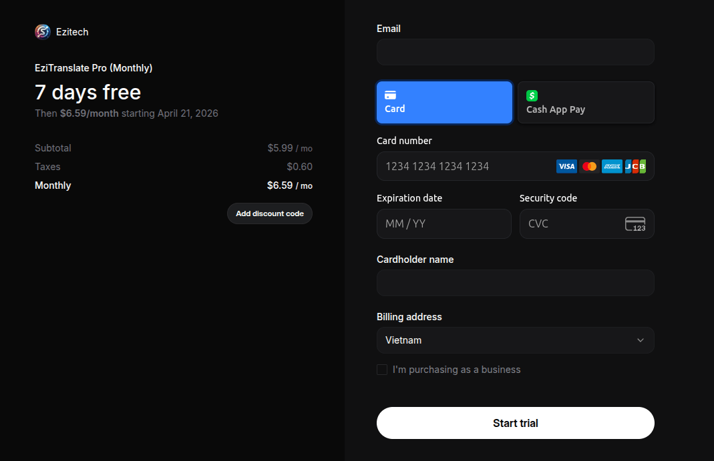
भुगतान के बाद, आपको एक प्राप्त होगा लाइसेंस कुंजी ईमेल के माध्यम से। लाइसेंस कुंजी एक लंबे कोड की तरह दिखती है (उदाहरण के लिए, LT-XXXX-XXXX-XXXX-XXXX). इस कुंजी को कॉपी करें.
आप भीतर धनवापसी का अनुरोध कर सकते हैं 30 दिन भुगतान तिथि से संपर्क करके phampdoan@gmail.com.
अपना लाइसेंस सक्रिय करें
खरीदने के बाद, एक्सटेंशन सेटिंग्स में अपनी लाइसेंस कुंजी सक्रिय करें।
एक्सटेंशन सेटिंग्स खोलें (गियर आइकन या राइट-क्लिक → विकल्प)। पर क्लिक करें "लाइसेंस" बाएं साइडबार में। अपनी लाइसेंस कुंजी को इनपुट फ़ील्ड में चिपकाएँ और क्लिक करें "सक्रिय करें"। एक्सटेंशन आपके लाइसेंस को सर्वर से सत्यापित करेगा।
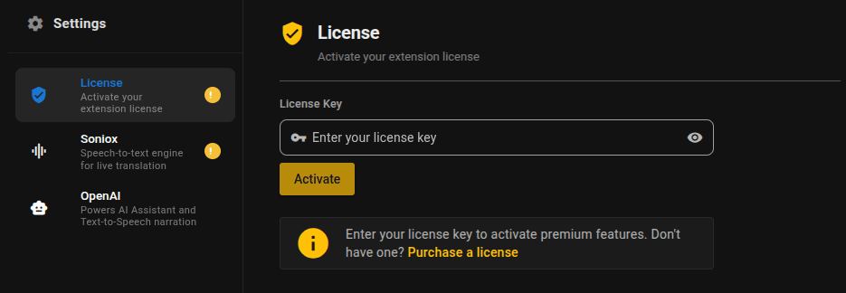
एक बार सक्रिय होने पर, आपको अपने लाइसेंस की स्थिति, लाइसेंस से जुड़ा ईमेल और समाप्ति तिथि दिखाई देगी। सभी प्रो सुविधाएँ अब अनलॉक हो गई हैं।
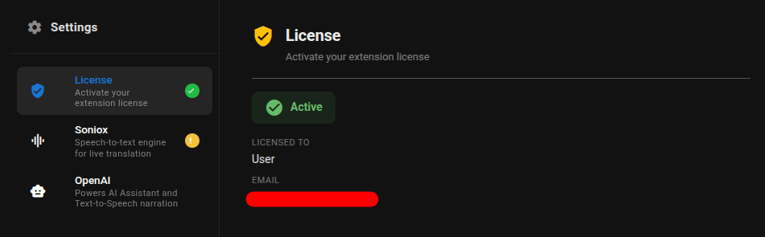
यदि आपने पहले किसी अन्य डिवाइस पर लाइसेंस सक्रिय किया है, तो आप इसका उपयोग कर सकते हैं "बलपूर्वक सक्रिय करें" लाइसेंस को अपने वर्तमान डिवाइस पर स्थानांतरित करने का विकल्प। प्रत्येक लाइसेंस एक समय में केवल एक डिवाइस पर सक्रिय हो सकता है।
मुफ़्त बनाम प्रो सुविधाएँ
यहां बताया गया है कि आप मुफ़्त संस्करण के साथ क्या कर सकते हैं और प्रो लाइसेंस की आवश्यकता क्या है।
| फ़ीचर | निःशुल्क | प्रो |
|---|---|---|
| वास्तविक समय में अनुवाद | ✓ | ✓ |
| 60+ भाषाएँ | ✓ | ✓ |
| स्पीकर लेबल | ✓ | ✓ |
| पैनल को खींचें, आकार बदलें, छोटा करें | ✓ | ✓ |
| फ़ॉन्ट आकार नियंत्रण | ✓ | ✓ |
| प्रतिलेख डाउनलोड करें (TXT/JSON) | — | ✓ |
| प्रतिलेख डाउनलोड करें (एसआरटी) | — | ✓ |
| उनकी आवाज़ सुनाएँ (टीटीएस) | — | ✓ |
| मेरी आवाज सुनाओ (दुभाषिया) | — | ✓ |
| चैट के माध्यम से अनुवाद भेजें | — | ✓ |
| उपशीर्षक मोड | — | ✓ |
| इनलाइन एआई असिस्टेंट | — | ✓ |
| संदर्भ सेटिंग्स | ✓ | ✓ |
| वक्ता के नाम | ✓ | ✓ |
एक अनुवाद सत्र प्रारंभ करें
जानें कि किसी मीटिंग या वीडियो में अनुवाद कैसे शुरू करें।
किसी पर भी जाएं समर्थित मंच (उदाहरण के लिए, Google मीट, ज़ूम, यूट्यूब, आदि) और किसी मीटिंग में शामिल हों या वीडियो चलाएं।
क्लिक करें लाइव ट्रांसलेटर आइकन आपके ब्राउज़र टूलबार में। अनुवादक पैनल पृष्ठ पर दिखाई देगा. आप भी क्लिक कर सकते हैं फ्लोटिंग आइकन जो पेज पर दिखाई देता है।
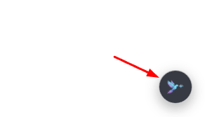
पैनल के शीर्ष पर दो भाषा ड्रॉपडाउन का उपयोग करें:
- "मेरी भाषा" - भाषा आप बोलें (उदाहरण के लिए, वियतनामी)।
- "उनकी भाषा" - भाषा अन्य बोलें कि आप अनुवाद करना चाहते हैं (उदाहरण के लिए, अंग्रेजी)।
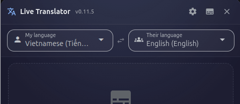
क्लिक करें शुरू करें पैनल के नीचे कंट्रोल बार में बटन (प्ले आइकन)।
आपका ब्राउज़र ऑडियो कैप्चर करने की अनुमति मांग सकता है - क्लिक करें "अनुमति दें" और वह टैब चुनें जिसे आप कैप्चर करना चाहते हैं।
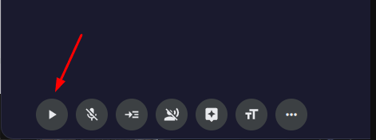
जैसे लोग बोलते हैं, आपको दोनों दिखाई देंगे मूल पाठ और अनुवादित पाठ प्रतिलेख क्षेत्र में दिखाई देते हैं। लाइनें स्वचालित रूप से स्पीकर द्वारा समूहीकृत हो जाती हैं।
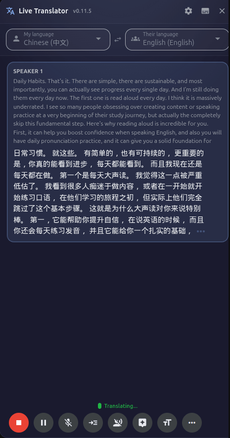
प्रतिलेख नवीनतम पाठ दिखाने के लिए स्वतः स्क्रॉल होता है। यदि आप पहले का पाठ पढ़ने के लिए ऊपर स्क्रॉल करते हैं, तो स्वतः-स्क्रॉल रुक जाता है। क्लिक करें "नवीनतम तक स्क्रॉल करें" बटन जो लाइव टेक्स्ट पर वापस जाता हुआ प्रतीत होता है।
नियंत्रण: रोकें, फिर से शुरू करें, समाप्त करें
अनुवाद सत्र नियंत्रणों को समझें।
| बटन | यह क्या करता है |
|---|---|
| शुरू करें (▶) | एक नया अनुवाद सत्र शुरू होता है। किसी भी पिछले प्रतिलेख को साफ़ करता है। |
| रोकें (⏸) | अस्थायी रूप से अनुवाद रोक देता है। प्रतिलेख रखा गया है. ऑडियो कैप्चर जारी है लेकिन टेक्स्ट रुका हुआ है। |
| फिर से शुरू करें (▶) | विराम के बाद अनुवाद जारी रखता है। नया पाठ पिछली सामग्री के बाद प्रकट होता है। |
| समाप्त (⏹) | सत्र को पूरी तरह से रोक देता है। जब तक आप नया सत्र शुरू नहीं करते तब तक प्रतिलेख स्क्रीन पर रखा जाता है। ऑडियो कैप्चर समाप्त करता है, माइक और कथन बंद करता है। |
भाषाएं बदलें
आप किसी भी समय अनुवाद की भाषाएँ बदल सकते हैं।
दोनों में से किसी एक पर क्लिक करें "मेरी भाषा" या "उनकी भाषा" पैनल के शीर्ष पर ड्रॉपडाउन।
सूची समर्थन करती है 60+ भाषाएँ वर्णानुक्रम में क्रमबद्ध। अपनी भाषा खोजने के लिए स्क्रॉल करें या टाइप करें। इसे चुनने के लिए क्लिक करें.
यदि कोई सत्र सक्रिय है, तो भाषा बदलने से नई भाषा जोड़ी के साथ अनुवाद स्वचालित रूप से पुनः आरंभ हो जाएगा। आपका भाषा चयन अगली बार के लिए सहेजा गया है।
अपना माइक्रोफोन चालू करें
अपना माइक्रोफ़ोन सक्षम करें ताकि मीटिंग/वीडियो ऑडियो के साथ-साथ आपका अपना भाषण भी अनुवादित हो सके।
कंट्रोल बार में, क्लिक करें माइक्रोफोन आइकन। माइक चालू होने पर आइकन सक्रिय (हाइलाइट) हो जाता है।
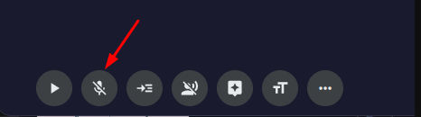
यदि यह पहली बार है, तो आपका ब्राउज़र माइक्रोफ़ोन की अनुमति मांगेगा। क्लिक करें "अनुमति दें".
माइक्रोफोन है डिफ़ॉल्ट रूप से बंद जब आप पैनल खोलते हैं। इसे केवल तभी चालू करें जब आप चाहते हैं कि आपका भाषण प्रतिलेखित और अनुवादित किया जाए। जब आप दबाते हैं समाप्त, माइक्रोफ़ोन स्वचालित रूप से बंद हो जाता है।
फ़ॉन्ट आकार बदलें
आरामदायक पढ़ने के लिए प्रतिलेख पाठ का आकार समायोजित करें।
कंट्रोल बार में, क्लिक करें फ़ॉन्ट आकार बटन (एए आइकन)। एक मेनू तीन आकारों के साथ प्रकट होता है:
- छोटा —संक्षिप्त दृश्य, अधिक पाठ में फिट बैठता है
- मध्यम - डिफ़ॉल्ट संतुलित आकार
- बड़ा - दूर से पढ़ना आसान
अपने पसंदीदा आकार पर क्लिक करें। परिवर्तन तुरंत लागू होता है और अगली बार के लिए सहेजा जाता है।
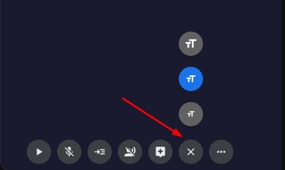
वक्ता के नाम
वक्ताओं को वास्तविक नाम निर्दिष्ट करें ताकि आप आसानी से पहचान सकें कि प्रतिलेख में किसने क्या कहा है। निःशुल्क
कंट्रोल बार में, क्लिक करें "अधिक" बटन (⋯ आइकन)। फिर क्लिक करें "स्पीकर सेटिंग्स" बटन।
स्पीकर सेटिंग्स संवाद खुल जाएगा।
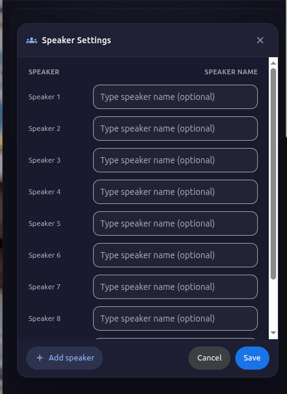
आपको पता लगाए गए स्पीकर (स्पीकर 1, स्पीकर 2, आदि) की एक सूची दिखाई देगी। प्रत्येक के आगे एक वास्तविक नाम टाइप करें (उदाहरण के लिए, "जॉन", "सारा")। क्लिक करें "पंक्ति जोड़ें" अगर आपको और चाहिए।
क्लिक करें "सहेजें"। सभी प्रतिलेख पंक्तियाँ - अतीत और भविष्य - अब आपके द्वारा निर्दिष्ट नामों का उपयोग करेंगी।
कथन (पाठ से वाक्)
अनुवादों को ऊंची आवाज में पढ़कर सुनाएं ताकि आप पढ़ने के बजाय सुन सकें। यह "उनकी आवाज़ सुनाएँ" सुविधा है। प्रो
कंट्रोल बार में, क्लिक करें कथन बटन (स्पीकर आइकन)। कथन सेटिंग संवाद खुलता है.
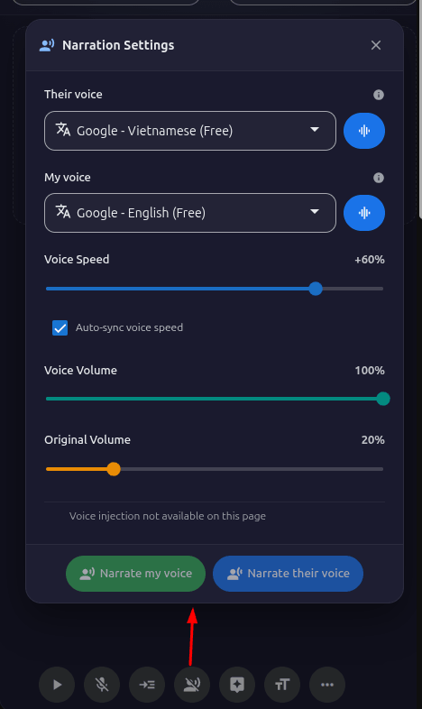
अपना वॉयस प्रदाता चुनें:
- Google अनुवाद (निःशुल्क) - बिना किसी एपीआई कुंजी के काम करता है। 60+ भाषाओं में अच्छी गुणवत्ता वाली आवाज़ें।
- ओपनएआई (प्रीमियम) - उच्च गुणवत्ता, अधिक प्राकृतिक आवाजें। OpenAI API कुंजी की आवश्यकता है.
ए चुनें आवाज ड्रॉपडाउन से क्लिक करें "परीक्षण" यह पूर्वावलोकन करने के लिए कि यह कैसा लगता है।
समायोजित करें आवाज की गति और वॉल्यूम यदि आवश्यक हो।
क्लिक करें "उनकी आवाज़ सुनाएँ" संवाद में बटन। अब, जब भी कोई अनुवाद आएगा, वह आपको ऊंचे स्वर में पढ़कर सुनाया जाएगा।
रोकने के लिए, कथन बटन पर फिर से क्लिक करें और क्लिक करें "रुको".
मेरी आवाज सुनाओ (दुभाषिया मोड)
अपनी भाषा में बात करें और अपनी अनुवादित आवाज को अन्य मीटिंग प्रतिभागियों को सुनाएं - जैसे एक निजी दुभाषिया रखना। प्रो
यह सुविधा चालू रहती है गूगल मीट, ज़ूम (वेब), माइक्रोसॉफ्ट टीमें (वेब), और व्हाट्सएप वेब। आपको आपकी जरूरत है माइक्रोफ़ोन सक्षम और एक अनुवाद सत्र चल रहा है.
क्लिक करें कथन बटन नैरेशन सेटिंग्स डायलॉग खोलने के लिए कंट्रोल बार में।
संवाद में, खोजें "मेरी आवाज सुनाओ" अनुभाग। अपनी पसंदीदा आवाज़ और प्रदाता (Google या OpenAI) चुनें। आप एक सेट कर सकते हैं अलग आवाज "मेरी आवाज़" और "उनकी आवाज़" कथन के लिए।
क्लिक करें "परीक्षण" अपनी चयनित आवाज का पूर्वावलोकन करने के लिए।
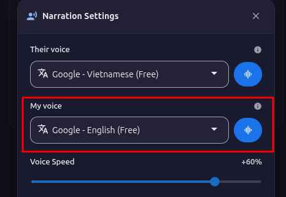
क्लिक करें "मेरी आवाज़ सुनाना शुरू करें"। जब आप बोलते हैं, तो आपके शब्द होते हैं:
- आपकी भाषा में प्रतिलेखित
- दूसरी भाषा में अनुवादित
- बैठक में ज़ोर से बोला जाए ताकि दूसरा व्यक्ति आपकी अनुवादित आवाज़ सुन सके
प्रतिध्वनि को रोकने के लिए अनुवादित ऑडियो चलने के दौरान आपका माइक्रोफ़ोन स्वचालित रूप से म्यूट हो जाता है।
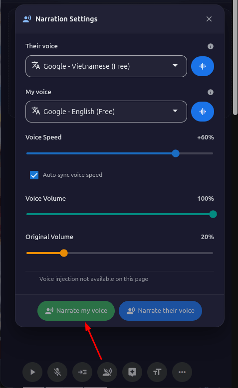
कथन बटन पर क्लिक करें और फिर "रुको", या दबाएँ समाप्त पूरे सत्र को रोकने के लिए (जिससे कथन भी रुक जाता है)।
आप केवल दौड़ सकते हैं एक समय में एक कथन विधा - या तो "मेरी आवाज़ सुनाओ" या "उनकी आवाज़ सुनाओ", दोनों एक साथ नहीं। कौन सा मोड सक्रिय है यह दिखाने के लिए टूलबार आइकन बदल जाता है।
चैट के माध्यम से अनुवाद भेजें
मीटिंग की चैट में अपने अनुवादित भाषण को टेक्स्ट संदेश के रूप में स्वचालित रूप से भेजें। प्रो
कंट्रोल बार में, देखें चैट भेजें बटन (माइक्रोफ़ोन आइकन के बगल में)। टॉगल ऑन करने के लिए इसे क्लिक करें - बटन बदल जाता है हरा सक्रिय होने पर।
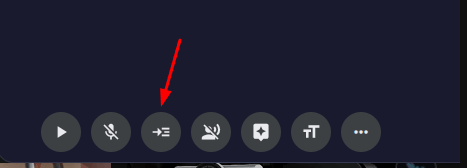
आपका माइक्रोफ़ोन चालू होने और अनुवाद सत्र चलने पर, जब आप बोलते हैं, तो आपका अनुवादित पाठ स्वचालित रूप से मीटिंग के चैट इनपुट में डाला जाता है और भेजा जाता है।
यह काम करता है गूगल मीट, ज़ूम (वेब), और माइक्रोसॉफ्ट टीमें (वेब).
यह तब उपयोगी है जब आपके प्लेटफ़ॉर्म के लिए "नैरेट माई वॉइस" उपलब्ध नहीं है, या यदि आप वॉयस नैरेशन और टेक्स्ट चैट अनुवाद दोनों एक साथ चाहते हैं।
उपशीर्षक मोड
एक न्यूनतम, मूवी-शैली उपशीर्षक बार पर स्विच करें जो स्क्रीन के नीचे केवल नवीनतम अनुवाद दिखाता है। प्रो
अनुवादक पैनल के शीर्षक बार में, क्लिक करें उपशीर्षक चिह्न (बंद कैप्शन आइकन)।
पूरे पैनल को स्क्रीन के नीचे एक पतली उपशीर्षक बार से बदल दिया जाएगा।
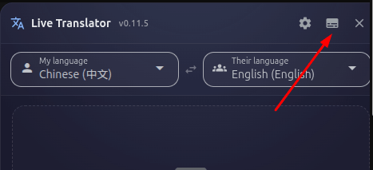
क्लिक करें ट्यून आइकन (सेटिंग्स गियर) समायोजित करने के लिए उपशीर्षक पट्टी पर:
- अस्पष्टता —बार को अधिक या कम पारदर्शी बनाने के लिए स्लाइड करें।
- फ़ॉन्ट आकार - छोटे, मध्यम या बड़े टेक्स्ट में से चुनें।
आप भी कर सकते हैं खींचें उपशीर्षक पट्टी को स्थानांतरित करने के लिए, और आकार बदलें किनारों को खींचकर।
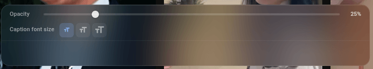
क्लिक करें बटन बंद करें (✕) पूर्ण अनुवादक पैनल पर लौटने के लिए उपशीर्षक पट्टी पर।
इनलाइन एआई असिस्टेंट
ट्रांसक्रिप्ट से सीधे बातचीत के संदर्भ के आधार पर एआई-संचालित स्पष्टीकरण और उत्पन्न उत्तर प्राप्त करें। प्रो
इनलाइन एआई असिस्टेंट के लिए एक की आवश्यकता होती है ओपनएआई एपीआई कुंजी सेटिंग्स में कॉन्फ़िगर किया जाना है।
एक पंक्ति समझाइये
जब आप प्रतिलेख में किसी पंक्ति पर होवर करते हैं, तो एआई आइकन (🤖) प्रकट होता है।
एआई सहायक एक अलग विंडो में खुलता है। यह आपको विस्तृत विवरण देने के लिए पूर्ण प्रतिलेख संदर्भ और चयनित पंक्ति का उपयोग करेगा।
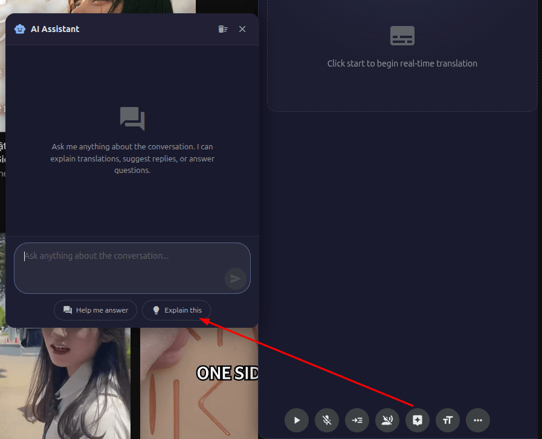
एक उत्तर उत्पन्न करें
एआई सहायक बातचीत में कही गई बातों के आधार पर एक सुझाया गया उत्तर तैयार करेगा। यह अधिक सटीक उत्तर प्रदान करने के लिए वेब खोज का भी उपयोग कर सकता है।
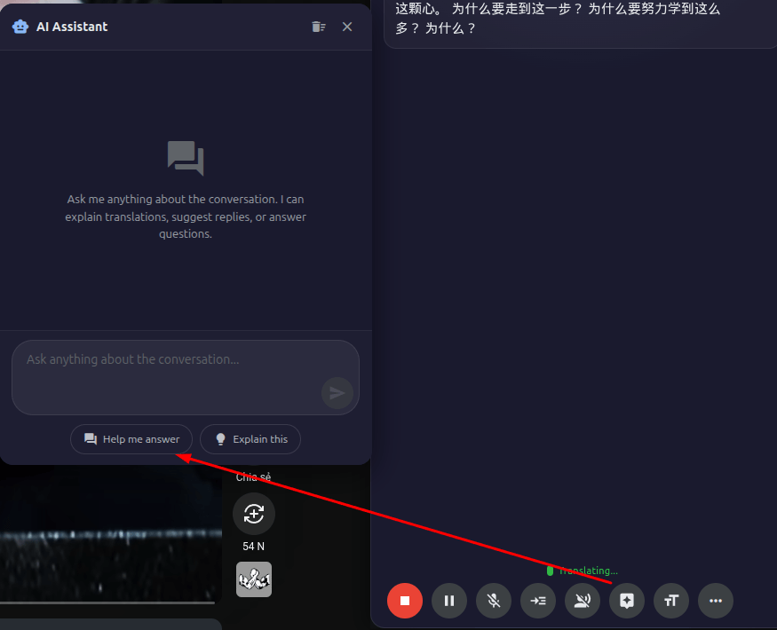
सहायक पैनल खोलें
आप एआई असिस्टेंट पैनल को सीधे यहां से भी खोल सकते हैं सहायक बटन (🤖 आइकन) कंट्रोल बार में। यह एक ड्रैग करने योग्य चैट विंडो खोलता है जहां आप कोई भी प्रश्न टाइप कर सकते हैं। सहायक के पास संदर्भ के रूप में पूर्ण प्रतिलेख तक पहुंच होती है।
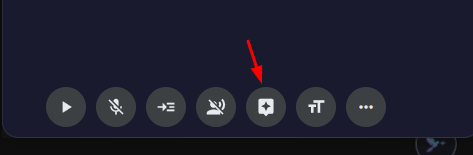
संदर्भ सेटिंग्स
अनुवाद सटीकता में सुधार के लिए बातचीत के विषय के बारे में संदर्भ प्रदान करें। निःशुल्क
क्लिक करें "अधिक" कंट्रोल बार में बटन (⋯), फिर क्लिक करें "संदर्भ".
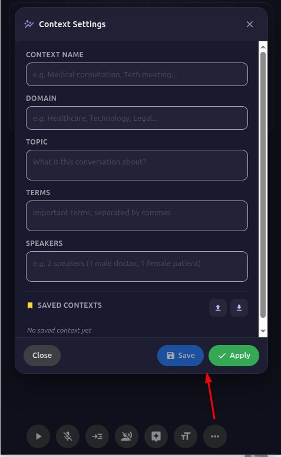
आप प्रदान कर सकते हैं:
- डोमेन/विषय - बातचीत किस बारे में है (उदाहरण के लिए, "मेडिकल कॉन्फ्रेंस", "सॉफ्टवेयर इंजीनियरिंग स्टैंडअप")।
- मुख्य शब्द - तकनीकी शब्द, व्यक्तिवाचक संज्ञा, या शब्दजाल जिन्हें पहचानना मुश्किल हो सकता है (उदाहरण के लिए, "कुबेरनेट्स, एपीआई गेटवे, माइक्रोसर्विसेज")।
- स्पीकर की जानकारी - प्रतिभागियों के नाम और भूमिकाएं (उदाहरण के लिए, "डॉ. स्मिथ - हृदय रोग विशेषज्ञ, प्रस्तुतिकरण")।
क्लिक करें "लागू करें" इस संदर्भ को वर्तमान सत्र के लिए अनुवाद इंजन को भेजने के लिए।
यदि आपकी समान विषयों पर बार-बार बैठकें होती हैं, तो क्लिक करें "प्रीसेट सहेजें" वर्तमान संदर्भ को सहेजने के लिए। अगली बार, सब कुछ दोबारा टाइप करने के बजाय बस प्रीसेट लोड करें।
आप भी कर सकते हैं आयात/निर्यात उन्हें साझा करने या बैकअप लेने के लिए JSON फ़ाइलों के रूप में प्रीसेट।
लाइव ट्रांसलेटर का उपयोग करते समय यूट्यूब, संदर्भ फ़ील्ड हो सकते हैं स्वचालित रूप से भरा हुआ वीडियो के शीर्षक और विवरण के साथ। इससे अनुवाद इंजन को वीडियो के विषय को बेहतर ढंग से समझने में मदद मिलती है।
प्रतिलेख डाउनलोड करें
अपने अनुवादित प्रतिलेखों को बाद में संदर्भ या अन्य टूल में उपयोग के लिए फ़ाइलों के रूप में सहेजें। प्रो
अनुवाद सत्र के बाद (या एक के दौरान), क्लिक करें डाउनलोड बटन (↓ आइकन) कंट्रोल बार में। डाउनलोड ट्रांसक्रिप्ट संवाद खुलता है।
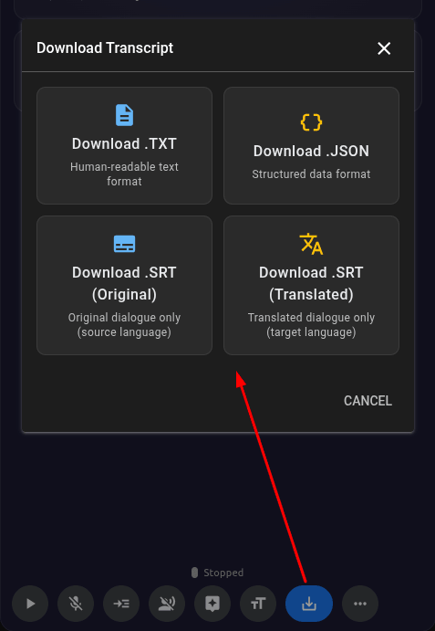
अपना पसंदीदा प्रारूप चुनें:
| प्रारूप | के लिए सर्वोत्तम |
|---|---|
| टेक्स्ट | टाइमस्टैम्प और स्पीकर नामों के साथ सरल टेक्स्ट फ़ाइल। पढ़ने में आसान. |
| जेएसओएन | संरचित डेटा प्रारूप। अन्य टूल या स्क्रिप्ट के साथ प्रसंस्करण के लिए अच्छा है। |
| एसआरटी (मूल) | मूल भाषा पाठ के साथ उपशीर्षक फ़ाइल। वीडियो संपादन सॉफ़्टवेयर में उपयोग करें. |
| एसआरटी (अनुवादित) | अनुवादित पाठ के साथ उपशीर्षक फ़ाइल। वीडियो संपादन सॉफ़्टवेयर में उपयोग करें. |
अपने चुने हुए प्रारूप के लिए डाउनलोड बटन पर क्लिक करें। फ़ाइल आपके ब्राउज़र में जेनरेट होती है और आपके डिफ़ॉल्ट डाउनलोड फ़ोल्डर में सहेजी जाती है।
ट्रांसक्रिप्ट फ़ाइलें उत्पन्न होती हैं पूरी तरह से आपके ब्राउज़र में। डाउनलोड प्रक्रिया के दौरान किसी भी सर्वर पर कोई ट्रांसक्रिप्ट डेटा नहीं भेजा जाता है।
ऑटो अपडेट जांच
हर बार जब आप इसे खोलते हैं तो एक्सटेंशन स्वचालित रूप से अपडेट की जांच करता है।
जब कोई नया संस्करण उपलब्ध होगा, तो आपको एक दिखाई देगा "अपडेट उपलब्ध है" अनुवादक पैनल के शीर्षक बार में बैज।
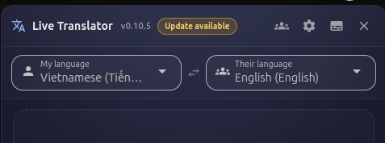
इंस्टॉल पेज पर ले जाने के लिए बैज पर क्लिक करें जहां आप नवीनतम संस्करण डाउनलोड कर सकते हैं। उसी का पालन करें स्थापना चरण अद्यतन करने के लिए।
समस्या निवारण
सामान्य समस्याएं और उन्हें कैसे ठीक करें।
"कोई सोनियोक्स एपीआई कुंजी नहीं" संदेश
आपने अभी तक अपनी सोनियोक्स एपीआई कुंजी दर्ज नहीं की है। पर जाएँ अपनी एपीआई कुंजी दर्ज करें इसे स्थापित करने के लिए।
कोई ऑडियो कैप्चर नहीं किया जा रहा है
- सुनिश्चित करें कि आपने क्लिक किया है "अनुमति दें" जब ब्राउज़र ने ऑडियो कैप्चर की अनुमति मांगी।
- सुनिश्चित करें कि आपने इसका चयन किया है सही टैब संकेत मिलने पर साझा करें।
- पृष्ठ को ताज़ा करने और अनुवादक को फिर से खोलने का प्रयास करें।
- जांचें कि मीटिंग/वीडियो में वास्तव में ऑडियो चल रहा है।
अनुवाद ग़लत लगता है
- सुनिश्चित करें "उनकी भाषा" ड्रॉपडाउन बोली जाने वाली सही भाषा पर सेट है।
- उपयोग करें संदर्भ सेटिंग्स विषय संबंधी जानकारी और मुख्य शब्द उपलब्ध कराने के लिए।
- सुनिश्चित करें कि ऑडियो गुणवत्ता स्पष्ट है - पृष्ठभूमि शोर सटीकता को प्रभावित कर सकता है।
"मेरी आवाज़ सुनाओ" - अन्य लोग अनुवाद नहीं सुन सकते
- पुष्टि करें कि आप ए पर हैं समर्थित मंच (गूगल मीट, ज़ूम वेब, टीम्स वेब, व्हाट्सएप वेब)।
- सुनिश्चित करें कि एक अनुवाद सत्र है चल रहा है और आपका माइक्रोफ़ोन चालू है.
- जांचें कि आपके पास एक है प्रो लाइसेंस सक्रिय।
- मीटिंग पेज को रीफ्रेश करके फिर से शुरू करने का प्रयास करें।
ओपनएआई सुविधाएं काम नहीं कर रही हैं
- अपना सत्यापन करें ओपनएआई एपीआई कुंजी सही ढंग से दर्ज किया गया है सेटिंग्स.
- सुनिश्चित करें कि आपके पास OpenAI खाता है बिलिंग सेट अप पर्याप्त क्रेडिट के साथ।
- यदि आपको OpenAI सुविधाओं की आवश्यकता नहीं है, तो उपयोग करें गूगल अनुवाद आवाजें इसके बजाय कथन के लिए (निःशुल्क, कोई एपीआई कुंजी की आवश्यकता नहीं है)।
वेबसाइट पर एक्सटेंशन दिखाई नहीं दे रहा है
- लाइव ट्रांसलेटर केवल पर काम करता है समर्थित प्लेटफार्म। यह असमर्थित वेबसाइटों पर दिखाई नहीं देगा.
- यदि साइट समर्थित है लेकिन एक्सटेंशन दिखाई नहीं देता है, तो प्रयास करें पेज को रिफ्रेश कर रहा हूं.
- सुनिश्चित करें कि एक्सटेंशन है सक्षम आपके ब्राउज़र के एक्सटेंशन प्रबंधन पृष्ठ में।
संपर्क एवं सहायता
मदद चाहिए? कोई प्रश्न या सुझाव है?
डेवलपर से संपर्क करें:
- ईमेल: ezsolu.io@gmail.com
- वेबसाइट: https://translate.ezitech.io
- व्हाट्सएप: +84 355 561 599
- टेलीग्राम: ईज़ीटेक
यदि आपके पास नई सुविधाओं या सुधारों के लिए विचार हैं, तो हमें आपसे सुनना अच्छा लगेगा। अपने सुझावों के साथ हमें एक ईमेल भेजें!